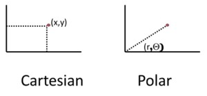

Problem solving and innovation
There are several issues regarding to problem solving, e.g. how individuals and teams go about solving problems, the role of diversity in problem solving, how ideas can get recombined, and how a lot of innovation actually comes from somebody having an idea in one place and it being applied someplace else. The two main themes are the role of diversity and the power of recombination.
We can model problem solving in a formal fashion. Assume that you take some action a and there is a payout function F, that gives the value of that action F(a). e.g., a could be a health care policy, and F could be how efficient this health care policy is. So a is the solution that you propose and F(a) is how good the solution is.
We want to understand how people come up with better solutions, hence where innovation comes from. For this, we use the metaphor of a landscape as a lens through which to interpret our models. Each solution has a value and the altitude can be seen as the value of it. Here B is the best possible solution. Assume that I have some idea X, which is represented by the black dot. It may be a good idea.
I might be looking for better ideas by going up and down the slope. In this way I well arrive at C and here I will get stuck. What we want to see is how people come up with these ideas, how teams of people come up with better ideas, and how we can avoid getting stuck on C, and possibly get to B. How do we model this?
The first part of the model is perspectives. A perspective is how you represent or encode a problem. So if someone poses some problem to you, whether it is software code, designing a bicycle, or a health care policy, you have some way of representing that problem in your head. Once you have encoded the problem, you can create a metaphorical landscape with a value for each possible solution. Different perspectives give different landscapes.
The second part of the model is heuristics. Heuristics define how you move on the landscape. Hill climbing is one heuristic. Random Search would be another heuristic. Different perspectives and different heuristics allow people to find a better solutions to problems. Individuals have perspectives and heuristics.
Teams of people are better in solving problems than the individuals in it because they have more tools, and those tools tend to be diverse. They have different perspectives and different heuristics, and all that diversity makes them better at coming up with new solutions and better solutions to problems.
Recombination means that solutions for different problems from different people can be combined to produce even better solutions for those problems. Sophisticated products like a houses, automobiles and computers consist of all sorts of solutions to sub-problems. By recombining solutions to sub-problems we get ever better solutions, and that is really a big driver of innovation, and growth depends on sustained innovation.
Perspectives and innovation
When you think about a problem, a perspective is how you represent it. Landscape is a way to represent the solutions along the horizontal axis and the value of these solutions as the height. The landscape metaphor can be formalized into a model. In this model a perspective is a representation or encoding of the set of all possible solutions. Then we can create our landscape by assigning a value to each one of those solutions. The right perspective depends on the problem.

e.g., there are different ways of representing a point. The first method is Cartesian, using the horizontal x and vertical y coordinates. The second method is the polar method using the radius r and the angle Θ. The question is which is better? If you want to represent a line, Cartesian may be better. e.g., you could define the line as y = 5. If you want to describe an arc, polar is better.
Perspectives help us find solutions to problems and to be innovative. In the history of science a lot of great breakthroughs, such as Newton’s theory of gravity, are new perspectives on old problems.
e.g., Mendeleev came up with the periodic table, where he represented the elements by atomic weight. In doing so, he found all sorts of structures, e.g. all the metals being lined up in certain columns. He could have organized them alphabetically, but that wouldn’t have made much sense. Atomic weight representation gives a lot of structure. When Mendeleev wrote down all the elements that were around at the time according to atomic weight, there were gaps in his representation. They were eventually found years later. The perspective of atomic weight was useful because it made people look for missing elements.
We use different perspectives all the time. e.g., when evaluating applicants for a job, you might look at competence or achievement in the form of grade point average (GPA), work ethic in the form of thickness of the resume, or creativity as indicated by the colorfulness of the personality. Depending on what you’re hiring for, any one of these might be fine. All these ways of organizing applicants are perspectives.
Perspectives will determine how hard the problem will be for you using the landscape metaphor. If the landscape is rugged, there are lots of peaks. To formalize this notion of peaks, we define local optima. A local optima is an action a where all neighboring actions have lower values, so that it is a peak on the landscape. So, if you look in all directions, there seems not to be a solution that is better. Better perspectives therefore have fewer local optima.
e.g., I’m tasked with inventing a new candy bar. There are many different options and I want to find the very best one. One way to represent those candy bars might be by the number of calories. In this case there may be three local optima. Alternatively, I might represent those candy bars by masticity, which is chew time. Chew time probably isn’t the best way to look at candy bars so, as a result this produces a landscape with many more peaks.
The best perspective would be a Mount Fuji landscape, the ideal landscape that just has one peak. An example of the Mount Fuji landscape, comes from scientific management. Frederick Taylor solved for the optimal size of a shovel.
Suppose we’re shovelling coal and I want to figure out how many pounds of coal can one shovel in a day as a function of the size of the pan. The larger the shovel gets, workers can shovel more coal, until the shovel gets too big and too heavy to lift. The shovel landscape is therefore single peaked and easy to solve. You are only certain to find a solution if the landscape is single peaked. If there are many peaks, you can easily get stuck on some local peak.
Herb Simon developed Sum to Fifteen to show people why different ways of representing a problem can make them more easy and make them like Mount Fuji, or can make them really difficult. Sum to fifteen works as follows. There are cards numbered from one to nine face up on a table. There are nine cards numbered from 1 to 9. There are two players. Each person takes turns, taking a card, until all the cards are gone. Possibly it could end sooner. If a player ever holds three cards that add up to exactly 15, he or she wins.
Assume Peter and David play this game. Peter goes first and takes the four. David goes next so he takes the five. Peter then takes the six. David then takes the eight. Eight plus five equals thirteen so that Peter has to take the two. Four plus two is six. So if David doesn’t take the nine, he’s going to lose. But six plus two is eight. So if David doesn’t take the seven, he’s going to lose. In this case Peter has won.
This game can be seen in a different perspective using the magic square where every row, column and diagonal adds up to fifteen. Peter goes first, and takes the four. David goes next, and takes the five. Peter takes the six, which is an odd choice, because now he can’t win. David then takes the eight. Peter blocks him with the two. But now it turns out, either the nine or seven will let Peter win. What game is this? This is tic-tac-toe.
Sum to fifteen is just tic-tac-toe, but on a different perspective. If you move the cards into the magic square, you create a Mount Fuji landscape. You make the problem really simple. So a lot of great breakthroughs, like the periodic table, Newton’s Theory of Gravity, are perspectives on problems that turned something really difficult to figure out into something that suddenly made a lot of sense.
In his book The Difference, Professor Page discusses the Savant Existence Theorem, which states that for any problem, there exists some way to represent it, so that it can be turned into a Mount Fuji problem. All you have to do is, is to put the very best solution in the middle, put the worst ones at the end, and line up the solutions in such a way so that you turn it into a Mount Fuji. In order to make the Mount Fuji, you would have to know the solution already. This isn’t a good way to solve problems. But there is such a perspective, and if you change your perspective, you might find it, and in this way you might find the solution 9.
There are a large amount of bad perspectives. With \(N\) alternatives, you have \(N!\) ways to create one dimensional landscapes. Suppose I have just ten alternatives and I want to order them. here’s ten things I could put first, nine things I could put second, eight things I could put third and so on. So there are \(10 × 9 × 8 × 7 × 6 × 5 × 4 × 3 × 2 × 1\) perspectives. Most of those are not very good because they are not going to organise this set of solutions in any useful way. Only a few of them are going to create Mount Fujis. If we just think in random ways, we’re likely to get a landscape that’s so rugged that we’re going to get stuck just about everywhere.
Heuristics
Heuristics is about finding solutions to problems once they have been represented in a perspective. A heuristic is a technique in which you look for new solutions. An example is hillclimb, which is moving locally to better points. It is one of many possible heuristics. Heuristics are defined relative to the problem to be solved. e.g., do the opposite is one famous heuristic that’s in a lot of books on how to innovate. It means to do the exact opposite of the existing solution.
e.g., when you go to buy something, the seller tells you the price. Do the opposite would be that the buyer tells the price. A lot of companies have been starting to do exactly this. So Priceline, lets buyers go to hotels and tell them how much they would like to pay to stay at the hotel or to use the airline. Alternatively, companies can go for lower costs or do the opposite, and charge a high price to signal quality. Doing the opposite can sometimes lead to interesting innovations.
Another heuristic is big rocks first. If you have a bucket and a bunch of rocks of various sizes, it is better to put in the big rocks first, because then you have a bigger chance of putting all the rocks in the bucket. The little rocks can fill in the gaps. In his book The 7 Habits of Highly Effective People, Stephen Covey argues that this is one heuristic successful people use. The big rocks represent the important things. It means that you solve the important issues first, and then arrange the solutions of the less important things around them, you will find better solutions 10.
But there is a drawback. There’s a famous theorem in computer science called the no free lunch theory, proved by Wolpert and McCready. All algorithms that search the same number of points with the goal of locating a maximum value of a function defined on a finite set perform exactly the same when averaged over all possible functions. This means that some of these problems are incredibly hard and some are really easy so that no heuristic is any better than any other.
This doesn’t mean that Covey is wrong. The free lunch theory states that if you look across all problems, no heuristic is better than the other. Covery spent a lot of time in management and he thinks that management problems lend themselves to the big rock search first heuristic. Another way of looking at the free lunch theory is that, unless you know something about the problem being solved, no algorithm or heuristic performs better than any other. Once you know something about the problem, you might decide that big rocks first does a good job in solving it. When you’re digging a hole in the ground then little rocks first may be a better solution.
Diverse heuristics or combining heuristics can be useful in finding solutions to problems. Suppose I have a choice based on two dimensions, e.g. ice creams that have a size and a number of chocolate chips. The heuristic to find the best taste is to look for a better option in horizontal and vertical directions. Another heuristic is to look in diagonal directions. If you combine those heuristics, you check more options and have a better chance of succeeding. Diverse perspectives plus diverse heuristics enable groups of people to find better solutions to problems.
Teams and problem solving
Perspectives and heuristics can be used to show why teams of people often can find solutions to problems that individuals can’t. That’s why teams are better. The term teams is used in a very loose sense. e.g., some person invented the toaster. Then somebody else improved it. Then somebody come up with the crumb tray. Then somebody else came up with the automatic shut off. Others came up with further improvements
Why are groups of people better than individuals? Think about the candy bar example. One perspective was based on calories. It had three local peaks. Let’s call them A, B and C. Another landscape based on masticity had five peaks. Let’s call these A, B, D, E and F. These peaks are different than the peaks for the caloric landscape, with the exception of A and B. A is the best possible point. The best possible point has to be a point in every landscape. Mr. Page doesn’t explain why this is so.
The caloric landscape is better than the masticity landscape because it has fewer local optima. The heuristic is just hill climbing. The peaks where people get stuck are A, B, C, D, E, and F. We can assign a value to each of those peaks. Suppose A is the global optimum, and some of these other peaks aren’t so good. We can ask what’s the average value of a peak for the caloric problem solver? It is the average of A, B and C. \(A = 10, B = 8 and C = 6\), so the average is 8, which is the ability of the caloric problem solver. You can do the same for the masticity problem solver. If \(A = 10, B = 8, D = 6, E = 4, F = 2\) then this ability is 6.
The caloric problem solver had fewer local optima, but also a higher average, so this is another reason why the caloric problem solver is better. The caloric problem solver may get stuck at B, and then pass the problem on to the masticity problem solver. He will then say that B looks good. If the caloric problem solver gets stuck at C, this point doesn’t look good for the masticity problem solver. This person can get from C to some other local optima. If that is D, E, or F, then it doesn’t look good to the caloric problem solver. Consequently, the team will get stuck at A or B, which is a better outcome. The average is 9, so the ability of the team is 9.
The ability of the team is higher than the ability of either person. This is because the team’s local optima is the intersection of the local optima for the individuals. This is why over time products get better, and why teams are innovative. The reason why a lot of science is done by teams is because the only place a team can get stuck is where everybody on the team can get stuck. This simple model of perspectives and heuristics can explain why teams are better than individuals and why, over time, we keep finding better and better solutions to problems.
The big claim is that the team can only get stuck at a local optima for everyone on the team. That means the team is better than the people in it. Therefore it is better to have people with different local optima, diverse perspectives and diverse heuristics. And that diversity produces different local optima, and those different local optima will mean that the intersections are taken, so that we end up with better points.
What’s missing? This model is highly stylised. Two things are left out. First, there is communication. The model assumed that team members communicate their solutions to one another right away. That is not always the case. There are a lot of misunderstandings and people might not listen. If you make a better product, for instance a better toaster, this could be the way of communicating. Second, There might be an error in interpreting the value of a solution. If a good proposal is made, others can think that it is a bad idea. The model assumes that there is no error in assessing the value of a solution.
In a more advanced model, there could be room for communication error and errant evaluation. That is going to hurt the case for using teams. Even so, this model has shown us something fairly powerful, which is that diverse representations of problems in diverse ways of coming up with solutions can make teams of people better able at coming up with solutions than individuals. And it gave an indication where innovation is coming from. Innovation is coming from different ways of seeing problems and different ways of finding solutions.
Recombination
Until now we focused on individual problems and individual solutions. Recombination is combing a solution or a heuristic to come up with even more solutions or more heuristics. Recombination is an incredibly powerful tool for science, innovation and economic growth. If we have a few solutions or a few heuristics, then we can combine those to create more. The real driving force behind innovation in the economy is that when we come up with a solution and then recombine it with all sorts of other solutions.
e.g., fill in the missing number. 1 2 3 5 _ 13, the missing number is 8, because you add those numbers up, or substract them if you go back. 1 4 _ 16 25 36, the missing number is 9 because it is the square of the next number, which is 3. 1 2 6 _ 1806, the missing number here is 42. The solution is harder to find because you have to combine the first two techniques. \(2 - 1 = 1 = 1², 6 - 2 = 4 = 2², 42 - 6 = 36 = 6², 1806 - 42 = 1764 = 42²\).
Recombining is a driver of economic growth and also of science because when a new solution can be combined with other solutions. This produces a geometric explosion in the number of possibilities. This may be the reason why it was possible to sustain economic growth by increasing the technology parameter A.
To show how this works, let’s start with finding out how many ways there are to pick three objects from ten. There are 10 I can pick first, 9 I can pick second and 8 I can pick third. 10 * 9 * 8 is too much because picking A, B and C is the same as picking B, A and C. There are three things I can pick first, 2 I can pick second, and 1 I can pick last. Hence, the answer is (10 * 9 * 8) / (3 * 2 * 1) = 120. With far more than 10 solutions, the number is very big. e.g., if you have 52 cards, and you want to combine 20 of them, then the number of combinations becomes (52 * 51 * … * 33) / (20 * 19 * … * 1) ≈ 125,000,000,000,000.
This idea of ideas building on ideas is the foundation of the theory of recombinant growth of Martin Weitzman. This theory states that ideas get generated all the time. e.g., the steam engine gets invented and developed, the gasoline engine gets developed, the microprocessor gets developed. And all these things get recombined into interesting combinations. And those combinations, in turn, get recombined to create ever more growth. e.g., many parts in the steam engine were solutions to previous problems. The same applies to the desk top computer.
All those parts of the steam engine weren’t developed the steam engine in mind. They were developed for other purposes. This is an idea from biology called exaptation. The classic example of exaptation, is the feather. Birds developed feathers primarily to keep them warm, but eventually those same feathers allowed them to fly. Expectation means that some innovation for one reason, gets used in another context. Another example is the laser. The laser was not invented with the idea of laser printers in mind. So once something is developed, it gets used for all sorts of unexpected things through the power of recombination.
This also applies to perspectives, e.g. the masticity perspective of a candy bar. Masticity can be a useful perspective for other problems, e.g. pasta or breakfast cereal. So even failed solutions for one problem may work well as a solution to other problems. e.g., the glue in the post it note was originally a failure because the glue didn’t stick very well. But it turned out to be useful for other sorts of problems, mainly making sticky notes.
There is more to it than this. It’s not just the recombination of ideas, because for hundreds and thousands of years people had ideas. There had to be some way to communicate those ideas. In @mokyr2011gifts the economist Joel Mokyr, argues that the rise of modern universities, the printing press, and scientific communication allowed ideas to be transferred from one location and one person to another. The technological revolution was driven by the fact that people could share ideas and then recombine them.
References
Note: this page is based on the following source:
- [@page2017modelthinking] MOOC, Course material & Transcripts.
- TA Notes by [@fisher2017modelthinking].
- Student notes by in [@kleinikink2016naturalmoney] and [@groh2017model].